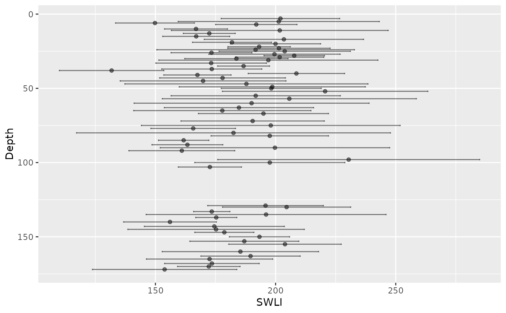

Get SWLI estimates and uncertainty
swli_results.RdGet SWLI estimates and uncertainty
Arguments
- obj
An object of class
BTFrfromrun_core
Examples
# \donttest{
test_modern_mod <- run_modern(
modern_elevation = NJ_modern_elevation,
modern_species = NJ_modern_species,
n.iter = 10,
n.burnin = 1,
n.thin = 1
)
#> Start chain ID 1
#> Compiling model graph
#> Resolving undeclared variables
#> Allocating nodes
#> Graph information:
#> Observed stochastic nodes: 175
#> Unobserved stochastic nodes: 3136
#> Total graph size: 20460
#>
#> Initializing model
#>
#> Hooraah, Chain 1 has finished!
#> Start chain ID 2
#> Compiling model graph
#> Resolving undeclared variables
#> Allocating nodes
#> Graph information:
#> Observed stochastic nodes: 175
#> Unobserved stochastic nodes: 3136
#> Total graph size: 20460
#>
#> Initializing model
#>
#> Hooraah, Chain 2 has finished!
#> Start chain ID 3
#> Compiling model graph
#> Resolving undeclared variables
#> Allocating nodes
#> Graph information:
#> Observed stochastic nodes: 175
#> Unobserved stochastic nodes: 3136
#> Total graph size: 20460
#>
#> Initializing model
#>
#> Hooraah, Chain 3 has finished!
#> Run complete!
test_core_mod <- run_core(test_modern_mod,
core_species = NJ_core_species,
n.iter = 10,
n.burnin = 1,
n.thin = 1
)
#> Start chain ID 1
#> Compiling model graph
#> Resolving undeclared variables
#> Allocating nodes
#> Graph information:
#> Observed stochastic nodes: 69
#> Unobserved stochastic nodes: 1173
#> Total graph size: 19006
#>
#> Initializing model
#>
#> Hooraah, Chain 1 has finished!
#> Start chain ID 2
#> Compiling model graph
#> Resolving undeclared variables
#> Allocating nodes
#> Graph information:
#> Observed stochastic nodes: 69
#> Unobserved stochastic nodes: 1173
#> Total graph size: 19006
#>
#> Initializing model
#>
#> Hooraah, Chain 2 has finished!
#> Start chain ID 3
#> Compiling model graph
#> Resolving undeclared variables
#> Allocating nodes
#> Graph information:
#> Observed stochastic nodes: 69
#> Unobserved stochastic nodes: 1173
#> Total graph size: 19006
#>
#> Initializing model
#>
#> Hooraah, Chain 3 has finished!
#> Run complete!
#> Poor/no convergence for: x0[1] (R = 3.341 )
#> Poor/no convergence for: x0[2] (R = 2.719 )
#> Poor/no convergence for: x0[3] (R = 1.919 )
#> Poor/no convergence for: x0[4] (R = 3.373 )
#> Poor/no convergence for: x0[5] (R = 1.932 )
#> Poor/no convergence for: x0[6] (R = 2.278 )
#> Poor/no convergence for: x0[7] (R = 2.194 )
#> Poor/no convergence for: x0[8] (R = 2.007 )
#> Poor/no convergence for: x0[9] (R = 2.292 )
#> Poor/no convergence for: x0[10] (R = 1.582 )
#> Poor/no convergence for: x0[11] (R = 3.65 )
#> Poor/no convergence for: x0[12] (R = 3.831 )
#> Poor/no convergence for: x0[13] (R = 4.059 )
#> Poor/no convergence for: x0[14] (R = 1.462 )
#> Poor/no convergence for: x0[15] (R = 3.144 )
#> Poor/no convergence for: x0[16] (R = 2.895 )
#> Poor/no convergence for: x0[17] (R = 1.768 )
#> Poor/no convergence for: x0[18] (R = 1.989 )
#> Poor/no convergence for: x0[19] (R = 1.776 )
#> Poor/no convergence for: x0[22] (R = 1.178 )
#> Poor/no convergence for: x0[24] (R = 2.308 )
#> Poor/no convergence for: x0[25] (R = 2.954 )
#> Poor/no convergence for: x0[26] (R = 4.478 )
#> Poor/no convergence for: x0[27] (R = 1.864 )
#> Poor/no convergence for: x0[28] (R = 2.783 )
#> Poor/no convergence for: x0[29] (R = 1.255 )
#> Poor/no convergence for: x0[30] (R = 3.042 )
#> Poor/no convergence for: x0[31] (R = 1.857 )
#> Poor/no convergence for: x0[32] (R = 4.272 )
#> Poor/no convergence for: x0[33] (R = 2.712 )
#> Poor/no convergence for: x0[34] (R = 1.151 )
#> Poor/no convergence for: x0[35] (R = 3.888 )
#> Poor/no convergence for: x0[37] (R = 1.636 )
#> Poor/no convergence for: x0[38] (R = 1.104 )
#> Poor/no convergence for: x0[39] (R = 2.042 )
#> Poor/no convergence for: x0[41] (R = 1.896 )
#> Poor/no convergence for: x0[42] (R = 3.265 )
#> Poor/no convergence for: x0[43] (R = 1.418 )
#> Poor/no convergence for: x0[44] (R = 3.267 )
#> Poor/no convergence for: x0[45] (R = 3.474 )
#> Poor/no convergence for: x0[47] (R = 2.695 )
#> Poor/no convergence for: x0[48] (R = 2.357 )
#> Poor/no convergence for: x0[49] (R = 2.364 )
#> Poor/no convergence for: x0[50] (R = 1.423 )
#> Poor/no convergence for: x0[51] (R = 2.107 )
#> Poor/no convergence for: x0[52] (R = 1.573 )
#> Poor/no convergence for: x0[53] (R = 1.837 )
#> Poor/no convergence for: x0[54] (R = 2.014 )
#> Poor/no convergence for: x0[55] (R = 1.334 )
#> Poor/no convergence for: x0[56] (R = 2.466 )
#> Poor/no convergence for: x0[57] (R = 2.043 )
#> Poor/no convergence for: x0[58] (R = 1.444 )
#> Poor/no convergence for: x0[59] (R = 1.362 )
#> Poor/no convergence for: x0[60] (R = 3.058 )
#> Poor/no convergence for: x0[61] (R = 2.585 )
#> Poor/no convergence for: x0[62] (R = 1.161 )
#> Poor/no convergence for: x0[63] (R = 2.377 )
#> Poor/no convergence for: x0[64] (R = 1.837 )
#> Poor/no convergence for: x0[65] (R = 1.98 )
#> Poor/no convergence for: x0[66] (R = 2.238 )
#> Poor/no convergence for: x0[67] (R = 2.246 )
#> Poor/no convergence for: x0[68] (R = 1.6 )
#> Poor/no convergence for: x0[69] (R = 1.987 )
#> WARNING! Convergence issues, check trace plots
swli_results(test_core_mod)
#> $p_SWLI

#>
#> $SWLI_dat
#> # A tibble: 69 × 5
#> Depth SWLI sigma lower upper
#> <dbl> <dbl> <dbl> <dbl> <dbl>
#> 1 3 202. 12.3 177. 227.
#> 2 5 201. 20.9 159. 243.
#> 3 6 150. 8.20 133. 166.
#> 4 7 192. 8.47 175. 209.
#> 5 10 167. 6.56 154. 180.
#> 6 11 202. 22.6 157. 247.
#> 7 13 172. 5.41 162. 183.
#> 8 15 167. 6.98 153. 181.
#> 9 17 203. 16.6 170. 237.
#> 10 19 182. 8.22 165. 198.
#> # … with 59 more rows
#>
# }